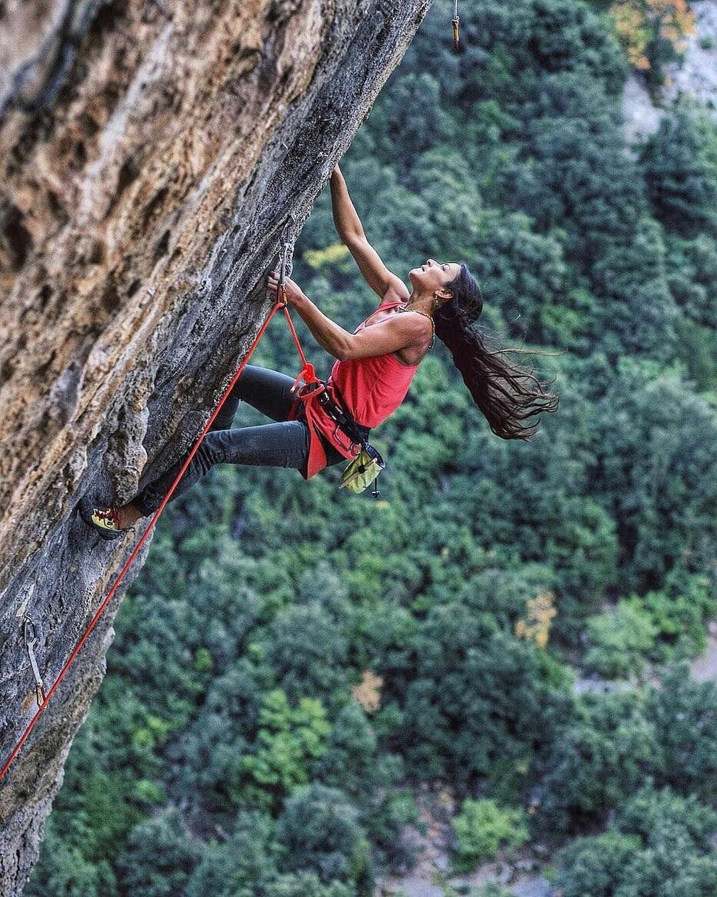

La Asociación Potosina de Escalada A.C. (APE, por sus siglas), es una organización de orden civil conformada por apasionados del deporte, que buscan a través de ella promover, organizar y fomentar la práctica de la escalada en la población potosina; así como servir de enlace y coordinador con las competencias regionales y nacionales. La APE, igualmente busca engendrar a semilla de una comunidad fuerte y participativa a través de la afiliación y la organización de eventos especiales como la proyección de cine de aventura, platicas, cursos y convivencias.

Fomentar y promover la práctica de la escalada en la población potosina, a partir de la organización de talleres, eventos y clínicas, dirigidas al fortalecimiento de la comunidad, no solo como escaladores, igualmente como seres humanos en contacto con la naturaleza.
Apoyar el desarrollo de una selección regional potosina que represente al estado en competencias regionales, nacionales e internacionales. Así como el fomento a una comunidad escaladora local fuerte y comprometida con el deporte.
Acercar y promover la escalada deportiva a la población potosina. Que el deportista no solo desarrolle habilidades físicas, igualmente adquiera capacidades sociales de cooperatividad, empatía y respeto por el otro y la naturaleza.
© 2016 Free HTML5. All Rights Reserved. Designed by FreeHTML5.co Available at Themewagon Demo Images: Unsplash